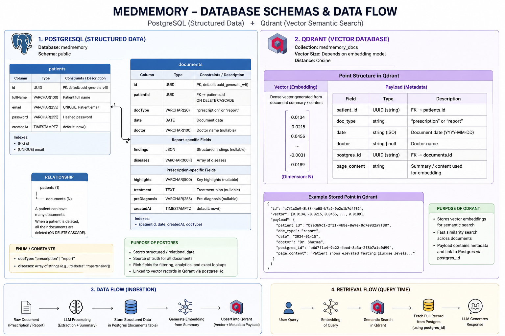

🗄️ Database & Vector Store Schema Design
MedMemory AI uses a hybrid storage architecture consisting of:
- PostgreSQL → Source of truth for structured patient records and chronological medical history.
- Qdrant Vector Database → Semantic memory layer for Retrieval-Augmented Generation (RAG) and contextual AI conversations.
This separation enables reliable timeline tracking while supporting intelligent semantic search across a patient's medical history.

🐘 1. Relational Database Layer (PostgreSQL)
The relational layer stores structured patient information extracted from prescriptions, reports, scans, and other medical documents.
patients Table
Primary profile storage for each patient.
| Column Name | Data Type | Constraints | Description |
|---|---|---|---|
id |
UUID |
PRIMARY KEY |
Unique patient identifier. |
full_name |
VARCHAR(100) |
NOT NULL |
Full name of the patient. |
email |
VARCHAR(255) |
UNIQUE, NOT NULL |
Login email address. |
password |
VARCHAR(255) |
NOT NULL |
Secure password hash (bcrypt/argon2). |
created_at |
TIMESTAMPTZ |
DEFAULT NOW() |
Record creation timestamp. |
documents Table
Unified storage for all uploaded medical documents.
Supported document types:
- Prescription
- Lab Report
- Diagnostic Report
- Scan Report
| Column Name | Data Type | Constraints | Description |
|---|---|---|---|
id |
UUID |
PRIMARY KEY |
Unique document identifier. |
patient_id |
UUID |
FOREIGN KEY |
References patients(id). |
doc_type |
VARCHAR(20) |
NOT NULL |
Document category (prescription, report). |
date |
DATE |
NOT NULL |
Date associated with the document. |
doctor |
VARCHAR(100) |
NULLABLE |
Doctor or clinician name. |
findings |
JSONB |
NULLABLE |
Structured report findings or extracted values. |
diseases |
TEXT[] |
NULLABLE |
Diseases identified within the document. |
highlights |
VARCHAR(500) |
NULLABLE |
Symptoms, complaints, observations, or summary notes. |
treatment |
TEXT |
NULLABLE |
Prescribed medications, dosage information, and treatment instructions. |
pre_diagnosis |
VARCHAR(255) |
NULLABLE |
Preliminary diagnosis or recommended investigations. |
created_at |
TIMESTAMPTZ |
DEFAULT NOW() |
Record creation timestamp. |
Entity Relationship
Patient
│
└───< Document
Each patient can own multiple medical documents.
Each document belongs to exactly one patient.
🌀 2. Dense Semantic Vector Layer (Qdrant)
The Qdrant index tracks unstructured contextual semantics. The payload fields are split into searchable content arrays and strict relational attributes used exclusively as high-speed query execution filters.
- Collection Name:
clinical_memories - Vector Signature: 1024 Dimensions (
mxbai-embed-large) - Distance Metric: Cosine Similarity
Payload & Metadata Architecture
| Field Component | JSON Key Name | Data Type | Search Configuration | Description / Purpose |
|---|---|---|---|---|
| Vector Input | page_content |
TEXT |
Embedded (Vectorized) | LLM-generated concise clinical summaries combining highlights, treatment, pre_diagnosis, findings, and diseases. Used for dense semantic vector RAG search queries. |
| Metadata Filter | date |
STRING (ISO) |
Indexed (No Embedding) | The exact calendar date of the clinical event. Used for chronological time-window pre-filtering. |
| Metadata Filter | doctor |
STRING |
Indexed (No Embedding) | Name of the treating clinician. Used to isolate records from specific provider names. |
| Metadata Filter | postgres_id |
STRING |
Indexed (No Embedding) | Relational anchor string patient_id. Ensures absolute multi-tenant privacy separation inside the shared vector collection. |
| Metadata Filter | doc_type |
STRING |
Indexed (No Embedding) | Explicit tracking tag indicating parent source provenance ("prescription" vs. "report"). |
📌 Design Rationale
This architecture provides:
✅ Fast chronological queries via PostgreSQL
✅ Semantic search via Qdrant
✅ Traceability from vector memory to source document
✅ RAG-friendly retrieval architecture
✅ Scalable patient-specific filtering
✅ Simple MVP implementation with room for future expansion